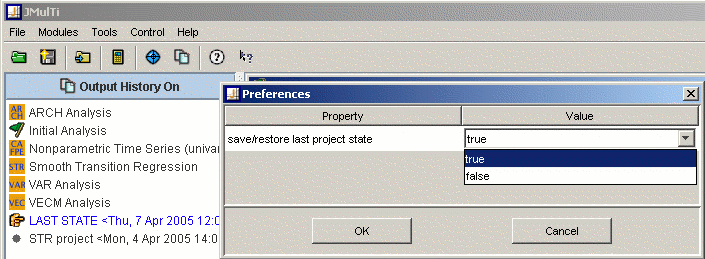

Settings
Description
JMulTi stores program specific settings in the XML file
$HOME/.jmulti_settings. This file is read
when the program starts and it is overwritten when
JMulTi finishes. The information contains user
specified settings, size and position of the main
frame, and other state information.

User Defined Settings
The behaviour of JMulTi can be adjusted via FILE ->
PREFERENCES. The preferences dialog presents a table
where the values can be changed by clicking on it.
-
save/restore last state: whether the last
state should be saved when the program finishes and
loaded when it starts, this is disabled when this
property is
false.
Last State
By default, JMulTi saves the state of the current
analysis in the file
$HOME/.jmulti_laststate when the program
is quit. This project is then automatically loaded at
program start, making it convenient to continue an
analysis. The project LAST STATE appears in the
explorer panel with the date when it was created. This
feature can also be disabled via the user preferences.
Unlike other projects, the LAST STATE project cannot be
edited.
|